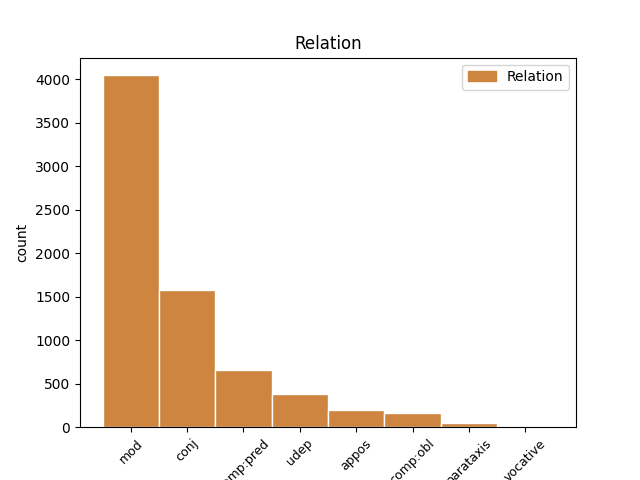
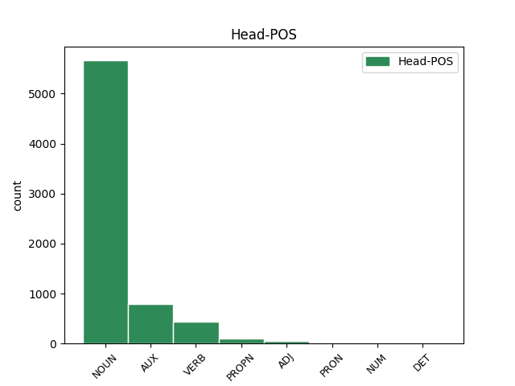
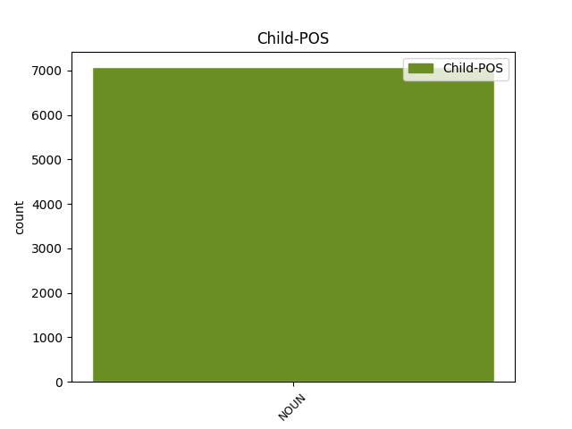

Distribution of features within this leaf



Agreement Rules sorted by frequency.
- When the dependent token is the modifer(mod) of the head token, and the dependent token is NOUN.
1 KOČEVJE _ _ _ _ 0 _ _ _
2 Iz _ _ _ _ 0 _ _ _
3 Kočevja _ _ _ _ 0 _ _ _
4 proti _ _ _ _ 0 _ _ _
5 Ljubljani _ _ _ _ 0 _ _ _
6 v _ _ _ _ 0 _ _ _
7 prihodnje _ _ _ _ 0 _ _ _
8 ne _ _ _ _ 0 _ _ _
9 bodo _ _ _ _ 0 _ _ _
10 vozili _ _ _ _ 0 _ _ _
11 zgolj _ _ _ _ 0 _ _ _
12 les _ _ _ _ 0 _ _ _
13 , _ _ _ _ 0 _ _ _
14 neprecenljivo _ _ _ _ 0 _ _ _
15 bogastvo bogastvo NOUN Ncnsa Case=Acc|Gender=Neut|Number=Sing 0 _ _ _
16 poraščene _ _ _ _ 0 _ _ _
17 pokrajine pokrajina NOUN Ncfsg Case=Gen|Gender=Fem|Number=Sing 15 mod _ Dep=15|Rel=Atr
18 tik _ _ _ _ 0 _ _ _
19 ob _ _ _ _ 0 _ _ _
20 hrvaški _ _ _ _ 0 _ _ _
21 meji _ _ _ _ 0 _ _ _
22 , _ _ _ _ 0 _ _ _
23 gneča _ _ _ _ 0 _ _ _
24 na _ _ _ _ 0 _ _ _
25 cesti _ _ _ _ 0 _ _ _
26 bo _ _ _ _ 0 _ _ _
27 tudi _ _ _ _ 0 _ _ _
28 zaradi _ _ _ _ 0 _ _ _
29 povečane _ _ _ _ 0 _ _ _
30 zmogljivosti _ _ _ _ 0 _ _ _
31 pri _ _ _ _ 0 _ _ _
32 proizvodnji _ _ _ _ 0 _ _ _
33 najbolj _ _ _ _ 0 _ _ _
34 znanih _ _ _ _ 0 _ _ _
35 slovenskih _ _ _ _ 0 _ _ _
36 sirov _ _ _ _ 0 _ _ _
37 . _ _ _ _ 0 _ _ _
1 Evropski _ _ _ _ 0 _ _ _
2 finančni _ _ _ _ 0 _ _ _
3 ministri _ _ _ _ 0 _ _ _
4 so _ _ _ _ 0 _ _ _
5 prepričani _ _ _ _ 0 _ _ _
6 , _ _ _ _ 0 _ _ _
7 da _ _ _ _ 0 _ _ _
8 ima _ _ _ _ 0 _ _ _
9 izbrani _ _ _ _ 0 _ _ _
10 kandidat _ _ _ _ 0 _ _ _
11 dovolj _ _ _ _ 0 _ _ _
12 izkušenj izkušnja NOUN Ncfpg Case=Gen|Gender=Fem|Number=Plur 0 _ _ _
13 in _ _ _ _ 0 _ _ _
14 sposobnosti sposobnost NOUN Ncfpg Case=Gen|Gender=Fem|Number=Plur 12 conj _ Dep=12|Rel=Coord
15 za _ _ _ _ 0 _ _ _
16 tako _ _ _ _ 0 _ _ _
17 pomemben _ _ _ _ 0 _ _ _
18 položaj _ _ _ _ 0 _ _ _
19 . _ _ _ _ 0 _ _ _
1 Izberite _ _ _ _ 0 _ _ _
2 med _ _ _ _ 0 _ _ _
3 potrditvenimi _ _ _ _ 0 _ _ _
4 polji _ _ _ _ 0 _ _ _
5 , _ _ _ _ 0 _ _ _
6 ki _ _ _ _ 0 _ _ _
7 so _ _ _ _ 0 _ _ _
8 na _ _ _ _ 0 _ _ _
9 voljo _ _ _ _ 0 _ _ _
10 ( _ _ _ _ 0 _ _ _
11 640x480 _ _ _ _ 0 _ _ _
12 je biti AUX Va-r3s-n Mood=Ind|Number=Sing|Person=3|Polarity=Pos|Tense=Pres|VerbForm=Fin 0 _ _ _
13 vedno _ _ _ _ 0 _ _ _
14 dobra _ _ _ _ 0 _ _ _
15 izbira izbira NOUN Ncfsn Case=Nom|Gender=Fem|Number=Sing 12 comp:pred _ Dep=12|Rel=Atr|SpaceAfter=No
16 ) _ _ _ _ 0 _ _ _
17 . _ _ _ _ 0 _ _ _
1 To _ _ _ _ 0 _ _ _
2 skupino _ _ _ _ 0 _ _ _
3 je biti AUX Va-r3s-n Mood=Ind|Number=Sing|Person=3|Polarity=Pos|Tense=Pres|VerbForm=Fin 0 _ _ _
4 ustanovila _ _ _ _ 0 _ _ _
5 leta leto NOUN Ncnsg Case=Gen|Gender=Neut|Number=Sing 3 udep _ Dep=4|Rel=AdvO
6 1992 _ _ _ _ 0 _ _ _
7 . _ _ _ _ 0 _ _ _
1 KOČEVJE _ _ _ _ 0 _ _ _
2 Iz _ _ _ _ 0 _ _ _
3 Kočevja _ _ _ _ 0 _ _ _
4 proti _ _ _ _ 0 _ _ _
5 Ljubljani _ _ _ _ 0 _ _ _
6 v _ _ _ _ 0 _ _ _
7 prihodnje _ _ _ _ 0 _ _ _
8 ne _ _ _ _ 0 _ _ _
9 bodo _ _ _ _ 0 _ _ _
10 vozili _ _ _ _ 0 _ _ _
11 zgolj _ _ _ _ 0 _ _ _
12 les les NOUN Ncmsan Animacy=Inan|Case=Acc|Gender=Masc|Number=Sing 0 _ _ _
13 , _ _ _ _ 0 _ _ _
14 neprecenljivo _ _ _ _ 0 _ _ _
15 bogastvo bogastvo NOUN Ncnsa Case=Acc|Gender=Neut|Number=Sing 12 appos _ Dep=0|Rel=Root
16 poraščene _ _ _ _ 0 _ _ _
17 pokrajine _ _ _ _ 0 _ _ _
18 tik _ _ _ _ 0 _ _ _
19 ob _ _ _ _ 0 _ _ _
20 hrvaški _ _ _ _ 0 _ _ _
21 meji _ _ _ _ 0 _ _ _
22 , _ _ _ _ 0 _ _ _
23 gneča _ _ _ _ 0 _ _ _
24 na _ _ _ _ 0 _ _ _
25 cesti _ _ _ _ 0 _ _ _
26 bo _ _ _ _ 0 _ _ _
27 tudi _ _ _ _ 0 _ _ _
28 zaradi _ _ _ _ 0 _ _ _
29 povečane _ _ _ _ 0 _ _ _
30 zmogljivosti _ _ _ _ 0 _ _ _
31 pri _ _ _ _ 0 _ _ _
32 proizvodnji _ _ _ _ 0 _ _ _
33 najbolj _ _ _ _ 0 _ _ _
34 znanih _ _ _ _ 0 _ _ _
35 slovenskih _ _ _ _ 0 _ _ _
36 sirov _ _ _ _ 0 _ _ _
37 . _ _ _ _ 0 _ _ _
1 Kot _ _ _ _ 0 _ _ _
2 je _ _ _ _ 0 _ _ _
3 bilo _ _ _ _ 0 _ _ _
4 dogovorjeno _ _ _ _ 0 _ _ _
5 , _ _ _ _ 0 _ _ _
6 bo _ _ _ _ 0 _ _ _
7 GR _ _ _ _ 0 _ _ _
8 v _ _ _ _ 0 _ _ _
9 enem _ _ _ _ 0 _ _ _
10 mesecu _ _ _ _ 0 _ _ _
11 plačal plačati VERB Vmep-sm Aspect=Perf|Gender=Masc|Number=Sing|VerbForm=Part 0 _ _ _
12 nadškofiji nadškofija NOUN Ncfsd Case=Dat|Gender=Fem|Number=Sing 11 comp:obl _ Dep=11|Rel=Obj
13 približno _ _ _ _ 0 _ _ _
14 352 _ _ _ _ 0 _ _ _
15 milijonov _ _ _ _ 0 _ _ _
16 tolarjev _ _ _ _ 0 _ _ _
17 . _ _ _ _ 0 _ _ _
1 ROL rol NOUN Ncmsn Case=Nom|Gender=Masc|Number=Sing 20 parataxis _ Dep=0|Rel=Root
2 Ko _ _ _ _ 0 _ _ _
3 je _ _ _ _ 0 _ _ _
4 Berlusconijev _ _ _ _ 0 _ _ _
5 mikrokirurg _ _ _ _ 0 _ _ _
6 zagledal _ _ _ _ 0 _ _ _
7 Ljubljenega _ _ _ _ 0 _ _ _
8 vodjo _ _ _ _ 0 _ _ _
9 , _ _ _ _ 0 _ _ _
10 ki _ _ _ _ 0 _ _ _
11 ga _ _ _ _ 0 _ _ _
12 je _ _ _ _ 0 _ _ _
13 obiskal _ _ _ _ 0 _ _ _
14 ob _ _ _ _ 0 _ _ _
15 vrnitvi _ _ _ _ 0 _ _ _
16 iz _ _ _ _ 0 _ _ _
17 Davosa _ _ _ _ 0 _ _ _
18 , _ _ _ _ 0 _ _ _
19 se _ _ _ _ 0 _ _ _
20 je biti AUX Va-r3s-n Mood=Ind|Number=Sing|Person=3|Polarity=Pos|Tense=Pres|VerbForm=Fin 0 _ _ _
21 bridko _ _ _ _ 0 _ _ _
22 zjokal _ _ _ _ 0 _ _ _
23 in _ _ _ _ 0 _ _ _
24 za _ _ _ _ 0 _ _ _
25 vedno _ _ _ _ 0 _ _ _
26 odložil _ _ _ _ 0 _ _ _
27 instrumente _ _ _ _ 0 _ _ _
28 . _ _ _ _ 0 _ _ _
1 Sklonil _ _ _ _ 0 _ _ _
2 se _ _ _ _ 0 _ _ _
3 je _ _ _ _ 0 _ _ _
4 k _ _ _ _ 0 _ _ _
5 Barbarossi _ _ _ _ 0 _ _ _
6 in _ _ _ _ 0 _ _ _
7 se _ _ _ _ 0 _ _ _
8 posmehnil _ _ _ _ 0 _ _ _
9 : _ _ _ _ 0 _ _ _
10 » _ _ _ _ 0 _ _ _
11 Tebi _ _ _ _ 0 _ _ _
12 gre iti VERB Vmbr3s Mood=Ind|Number=Sing|Person=3|Tense=Pres|VerbForm=Fin 0 _ _ _
13 najbrž _ _ _ _ 0 _ _ _
14 drugače _ _ _ _ 0 _ _ _
15 , _ _ _ _ 0 _ _ _
16 rdečečopek rdečečopek NOUN Ncmsn Case=Nom|Gender=Masc|Number=Sing 12 vocative _ Dep=0|Rel=Root|SpaceAfter=No
17 , _ _ _ _ 0 _ _ _
18 kajne _ _ _ _ 0 _ _ _
19 ? _ _ _ _ 0 _ _ _
Disagree Examples:
1 " _ _ _ _ 0 _ _ _
2 Tistega _ _ _ _ 0 _ _ _
3 večera _ _ _ _ 0 _ _ _
4 sem _ _ _ _ 0 _ _ _
5 preveč _ _ _ _ 0 _ _ _
6 popil _ _ _ _ 0 _ _ _
7 , _ _ _ _ 0 _ _ _
8 zgodilo _ _ _ _ 0 _ _ _
9 se _ _ _ _ 0 _ _ _
10 je _ _ _ _ 0 _ _ _
11 mesec mesec NOUN Ncmsan Animacy=Inan|Case=Acc|Gender=Masc|Number=Sing 0 _ _ _
12 dni dan NOUN Ncmpg Case=Gen|Gender=Masc|Number=Plur 11 mod _ Dep=11|Rel=Atr
13 po _ _ _ _ 0 _ _ _
14 tem _ _ _ _ 0 _ _ _
15 , _ _ _ _ 0 _ _ _
16 ko _ _ _ _ 0 _ _ _
17 sem _ _ _ _ 0 _ _ _
18 izvedel _ _ _ _ 0 _ _ _
19 , _ _ _ _ 0 _ _ _
20 da _ _ _ _ 0 _ _ _
21 me _ _ _ _ 0 _ _ _
22 žena _ _ _ _ 0 _ _ _
23 vara _ _ _ _ 0 _ _ _
24 . _ _ _ _ 0 _ _ _
1 V _ _ _ _ 0 _ _ _
2 bolnišnici _ _ _ _ 0 _ _ _
3 bodo _ _ _ _ 0 _ _ _
4 uvedli _ _ _ _ 0 _ _ _
5 tudi _ _ _ _ 0 _ _ _
6 s _ _ _ _ 0 _ _ _
7 šolo _ _ _ _ 0 _ _ _
8 za _ _ _ _ 0 _ _ _
9 starše _ _ _ _ 0 _ _ _
10 , _ _ _ _ 0 _ _ _
11 ki _ _ _ _ 0 _ _ _
12 je _ _ _ _ 0 _ _ _
13 namenjena _ _ _ _ 0 _ _ _
14 vzgoji _ _ _ _ 0 _ _ _
15 in _ _ _ _ 0 _ _ _
16 izobraževanju izobraževanje NOUN Ncnsd Case=Dat|Gender=Neut|Number=Sing 0 _ _ _
17 nosečnic nosečnica NOUN Ncfpg Case=Gen|Gender=Fem|Number=Plur 16 mod _ Dep=16|Rel=Atr
18 in _ _ _ _ 0 _ _ _
19 njihovih _ _ _ _ 0 _ _ _
20 partnerjev _ _ _ _ 0 _ _ _
21 . _ _ _ _ 0 _ _ _
1 V _ _ _ _ 0 _ _ _
2 bolnišnici _ _ _ _ 0 _ _ _
3 so _ _ _ _ 0 _ _ _
4 že _ _ _ _ 0 _ _ _
5 pred _ _ _ _ 0 _ _ _
6 časom _ _ _ _ 0 _ _ _
7 pripravili _ _ _ _ 0 _ _ _
8 vse _ _ _ _ 0 _ _ _
9 potrebno _ _ _ _ 0 _ _ _
10 za _ _ _ _ 0 _ _ _
11 negovanje negovanje NOUN Ncnsa Case=Acc|Gender=Neut|Number=Sing 0 _ _ _
12 bolnikov bolnik NOUN Ncmpg Case=Gen|Gender=Masc|Number=Plur 11 mod _ Dep=11|Rel=Atr|SpaceAfter=No
13 , _ _ _ _ 0 _ _ _
14 pri _ _ _ _ 0 _ _ _
15 katerih _ _ _ _ 0 _ _ _
16 je _ _ _ _ 0 _ _ _
17 bilo _ _ _ _ 0 _ _ _
18 zdravljenje _ _ _ _ 0 _ _ _
19 končano _ _ _ _ 0 _ _ _
20 . _ _ _ _ 0 _ _ _
1 Lahko _ _ _ _ 0 _ _ _
2 so biti AUX Va-r3p-n Mood=Ind|Number=Plur|Person=3|Polarity=Pos|Tense=Pres|VerbForm=Fin 0 _ _ _
3 posledica posledica NOUN Ncfsn Case=Nom|Gender=Fem|Number=Sing 2 comp:pred _ Dep=2|Rel=Atr
4 vnetja _ _ _ _ 0 _ _ _
5 vek _ _ _ _ 0 _ _ _
6 , _ _ _ _ 0 _ _ _
7 ki _ _ _ _ 0 _ _ _
8 je _ _ _ _ 0 _ _ _
9 pogosto _ _ _ _ 0 _ _ _
10 pri _ _ _ _ 0 _ _ _
11 ljudeh _ _ _ _ 0 _ _ _
12 , _ _ _ _ 0 _ _ _
13 ki _ _ _ _ 0 _ _ _
14 trpijo _ _ _ _ 0 _ _ _
15 za _ _ _ _ 0 _ _ _
16 alergijami _ _ _ _ 0 _ _ _
17 , _ _ _ _ 0 _ _ _
18 lahko _ _ _ _ 0 _ _ _
19 so _ _ _ _ 0 _ _ _
20 posledica _ _ _ _ 0 _ _ _
21 vnetja _ _ _ _ 0 _ _ _
22 veznic _ _ _ _ 0 _ _ _
23 , _ _ _ _ 0 _ _ _
24 dehidracije _ _ _ _ 0 _ _ _
25 , _ _ _ _ 0 _ _ _
26 stresa _ _ _ _ 0 _ _ _
27 , _ _ _ _ 0 _ _ _
28 preutrujenosti _ _ _ _ 0 _ _ _
29 … _ _ _ _ 0 _ _ _
1 Lahko _ _ _ _ 0 _ _ _
2 so _ _ _ _ 0 _ _ _
3 posledica _ _ _ _ 0 _ _ _
4 vnetja vnetje NOUN Ncnsg Case=Gen|Gender=Neut|Number=Sing 0 _ _ _
5 vek veka NOUN Ncfpg Case=Gen|Gender=Fem|Number=Plur 4 mod _ Dep=4|Rel=Atr|SpaceAfter=No
6 , _ _ _ _ 0 _ _ _
7 ki _ _ _ _ 0 _ _ _
8 je _ _ _ _ 0 _ _ _
9 pogosto _ _ _ _ 0 _ _ _
10 pri _ _ _ _ 0 _ _ _
11 ljudeh _ _ _ _ 0 _ _ _
12 , _ _ _ _ 0 _ _ _
13 ki _ _ _ _ 0 _ _ _
14 trpijo _ _ _ _ 0 _ _ _
15 za _ _ _ _ 0 _ _ _
16 alergijami _ _ _ _ 0 _ _ _
17 , _ _ _ _ 0 _ _ _
18 lahko _ _ _ _ 0 _ _ _
19 so _ _ _ _ 0 _ _ _
20 posledica _ _ _ _ 0 _ _ _
21 vnetja _ _ _ _ 0 _ _ _
22 veznic _ _ _ _ 0 _ _ _
23 , _ _ _ _ 0 _ _ _
24 dehidracije _ _ _ _ 0 _ _ _
25 , _ _ _ _ 0 _ _ _
26 stresa _ _ _ _ 0 _ _ _
27 , _ _ _ _ 0 _ _ _
28 preutrujenosti _ _ _ _ 0 _ _ _
29 … _ _ _ _ 0 _ _ _